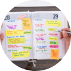

チームについて
STYLE（行動指針）
-
自由にはたらく
自由とは責任を持つこと
-
よく学ぶ
学ぶとは知らないことを知ること
-
ハートでうごく
ハートとは相手を思いやること
STYLE（行動指針）
-
自由にはたらく
自由とは責任を持つこと
-
よく学ぶ
学ぶとは知らないことを知ること
-
ハートでうごく
ハートとは相手を思いやること
どんな仕事するのか
受託一例
制作期間：1〜3ヶ月程度 / プロジェクトマネージャー：１名 / デザイナー：1名 / エンジニア：２名
- ヒアリング・企画提案
- ヒアリングからデザイナーが同席することもあります。 初期要件や予算等のヒアリングはプロジェクトマネージャーのみ、受注が確定してからデザイナーも同席する、
という形です。 - 受注後
- 制作に取り掛かる前に、ヒアリング内容を元にプロジェクトマネージャー・エンジニアとすり合わせを行います。 要件を確認しスケジュールを作成します。
- ワイヤフレーム
- XDでワイヤーフレームを作成し要件を整理していきます。 案件にもよりますがトップと下層数ページを作成し、残りのページはデザインフェーズで対応します。 プロジェクトマネージャーが作成する場合や、お客さまから支給される場合もあります。
- デザイン
- ワイヤーフレーム確定後、ブラッシュアップを行なっていきます。 FBを反映させながら残りの下層ページも五月雨に作成します。
- フロントエンドへ
- デザインがfixしたものからエンジニアにデザインデータを共有します。 画面遷移やアニメーションの指定等コミュニケーションをとりながら進めていきます。 実装が完了しテストアップされたページのデザインチェックをしていきます。
- 公開後
- 公開後も全体のチェックを行います。 データ納品が必要な場合は、作業データを整理しお客様に提出します。
SES一例
参画期間：３ヶ月～長期 / プロジェクトマネージャー：１名 / デザイナー：１名 / エンジニア：３名
- 要件定義
- プロジェクトマネージャーが作成した要件定義をもとに仕様や要件をインプットします。
- デザイン作成
- 事前にインプットした仕様に則りながらデザインを進めます ユーザビリティーを意識しながらプロダクトの品質向上に努めます 新規の際はトーン＆マナーがかけ離れないように意識しながら作成します。
- デザインチェック
- エンジニアがテスト仕様書作成、実装、コードレビューが完了後、実装後の見た目や挙動の確認をします。 実機を使用しデザインとの差異がないか、使い勝手は悪くないかなど
- 最終チェック
- プロダクトオーナー・プロジェクトマネージャーチェック完了後、エンジニアがバグがないか最終チェックを行い問題なければリリースされます。

- お茶会（1on1）
-
日々の困りごとの解消や、やりたいことを実現するためにどんなアプローチが必要かを考えることを目的に、月1回のペースで実施しています。
なんでも気軽に話してほしい、息抜きの場であってほしい、そんな想いを込めてD0チームでは1on1をお茶会と呼んでいます。
どんな仕事するのか
受託一例
制作期間：1〜3ヶ月程度 / プロジェクトマネージャー：１名 / デザイナー：1名 / エンジニア：２名
- ヒアリング・企画提案
- ヒアリングからデザイナーが同席することもあります。 初期要件や予算等のヒアリングはプロジェクトマネージャーのみ、受注が確定してからデザイナーも同席する、
という形です。 - 受注後
- 制作に取り掛かる前に、ヒアリング内容を元にプロジェクトマネージャー・エンジニアとすり合わせを行います。 要件を確認しスケジュールを作成します。
- ワイヤフレーム
- XDでワイヤーフレームを作成し要件を整理していきます。 案件にもよりますがトップと下層数ページを作成し、残りのページはデザインフェーズで対応します。 プロジェクトマネージャーが作成する場合や、お客さまから支給される場合もあります。
- デザイン
- ワイヤーフレーム確定後、ブラッシュアップを行なっていきます。 FBを反映させながら残りの下層ページも五月雨に作成します。
- フロントエンドへ
- デザインがfixしたものからエンジニアにデザインデータを共有します。 画面遷移やアニメーションの指定等コミュニケーションをとりながら進めていきます。 実装が完了しテストアップされたページのデザインチェックをしていきます。
- 公開後
- 公開後も全体のチェックを行います。 データ納品が必要な場合は、作業データを整理しお客様に提出します。
SES一例
参画期間：３ヶ月～長期 / プロジェクトマネージャー：１名 / デザイナー：１名 / エンジニア：３名
- 要件定義
- プロジェクトマネージャーが作成した要件定義をもとに仕様や要件をインプットします。
- デザイン作成
- 事前にインプットした仕様に則りながらデザインを進めます ユーザビリティーを意識しながらプロダクトの品質向上に努めます 新規の際はトーン＆マナーがかけ離れないように意識しながら作成します。
- デザインチェック
- エンジニアがテスト仕様書作成、実装、コードレビューが完了後、実装後の見た目や挙動の確認をします。 実機を使用しデザインとの差異がないか、使い勝手は悪くないかなど
- 最終チェック
- プロダクトオーナー・プロジェクトマネージャーチェック完了後、エンジニアがバグがないか最終チェックを行い問題なければリリースされます。
- お茶会（1on1）
-
日々の困りごとの解消や、やりたいことを実現するためにどんなアプローチが必要かを考えることを目的に、月1回のペースで実施しています。
なんでも気軽に話してほしい、息抜きの場であってほしい、そんな想いを込めてD0チームでは1on1をお茶会と呼んでいます。
インタビュー
子育てと両立しながら
働ける環境がある
デザイナー SHIRAISHI
- 7:00
- 9:00
- 11:00
- 13:00
- 15:00
- 17:00
- 19:00
- 21:00
- 23:00
- 7:20 起床起床、子供も起こして子供の朝ご飯や支度
- 8:20 夫が子供を保育園に送る
- 8:30 業務開始メールを確認してタスクを洗い出したら、デザイン作業を進める
- 10:30 デザインチームの朝会
- 11:00 クライアントとMTGZOOMを使ってクライアントと定例MTG
- 13:00 ランチ休憩
- 14:00 デザイン作業
- 17:00 業務終了
- 17:30 子供のお迎え
- 18:30 帰宅後、子供にご飯を食べさせる
- 19:30 子供の寝る準備お風呂に入れたり歯磨きなどをさせる
- 20:30 子供を寝かしつける
- 21:30 夫と晩御飯
- 22:30 自由時間
- 24:00 就寝
- どんなお仕事をしてますか。
-
入社当初よりデザイナーとして、主にアプリのデザイン業務（UI/UX改善）に携わっております。
誰が見ても分かりやすい、直感的に理解できてユーザーを迷わせないデザインの追求を意識しています。 - やりがいを教えてください。
-
前職はグラフィックデザイナーでしたので、基本的には自分自身で解決して、クライアントの要望に応えることに喜びを見出していましたが、現在はコミュニケーションの幅が広がったと思います。
クライアント、ユーザー、そしてチームメンバーの課題解決に貢献するために、開発メンバーと相談をしながら共創していけることに魅力を感じています。 - 子育てと仕事の両立はどのようにしてますか？
-
まず家族の協力が必要不可欠です。
夫や実家など協力を仰げる人たちに頼り、「孤育て」ではなく助け合いながら「子育て」していける環境作りが大切だと思います。
また、夫とはTimeTreeアプリでスケジュールの共有をしていますので、オンラインセミナーなど勉強時間を確保したいときは、事前に子供のことをお願いしています。
私の場合はフルリモートでフレックス（フルタイム）を活用していますが、就業時間の確保が難しい方は、時短勤務を視野に入れても良いかもしれません。（弊社は短時間勤務制度があったはず？）
限られた時間だからこそ、どう過ごすのが今の自分にとってベストかを考え、一人で抱え込まないことが一番大事です。
仕事も
プライベートも充実
デザイナー YAHATA
- 7:00
- 9:00
- 11:00
- 13:00
- 15:00
- 17:00
- 19:00
- 21:00
- 23:00
- 7:00 起床
- 8:00 業務開始1日のタスク確認しスケジュール設定する
- 8:30 デザイン作業
- 10:30 デザインチームの朝会
- 11:00 デザイン作業
- 13:00 ランチ休憩
- 14:00 MTG前の確認定例MTG前に進捗と共有事項整理する 
- 14:30 クライアントと定例MTGZOOMを使ってクライアントと定例MTG
- 17:00 業務終了
- 17:15 移動
- 18:30 ライブ以前から楽しみにしていたライブへ
- 21:00 ライブ終了
- 23:00 帰宅
- 24:00 自由時間
- 2:00 就寝
- どんなお仕事をしてますか。
-
1ページのランディングページやバナー、大規模な管理画面デザインまで主にWeb中心でデザインしています。
大手2社の常駐経験もあり、デザインだけでなく企画からアプリ開発のプロジェクトに参画させていただくこともありました。
現在常駐している会社ではアプリのUI改修などの依頼も多く、Web以外の領域も広げながら知見や経験を増やしています。 - やりがいを教えてください。
-
チーム全体で良いモノを完成させ公開された時に一番やりがいを感じますね。
例題として大規模なページ改修を上げると、膨大な情報を整理し課題解決のために再構築して、＋見やすさ・伝わりやすさなど肉付けするのがデザイナーなのでデザイン観点での仕様提案も必要不可欠です。
特にWebやアプリはデザイナー一人で完結できるものではないので、肩書きに囚われずディスカッションを重ねコミュニケーションを取りながらみんなで課題に対して取り組んでいます。
- 自分から見てレイはどんな会社ですか。
-
個人の意思を尊重してくれる会社だと思います。
社員がやりたいことを定期的にヒアリングし、実現させるためのアクションを上司も一緒に考えてくれるので、”自分では少しハードルが高いかも…”という課題にも積極的に挑戦してステップアップできる環境だと思います。